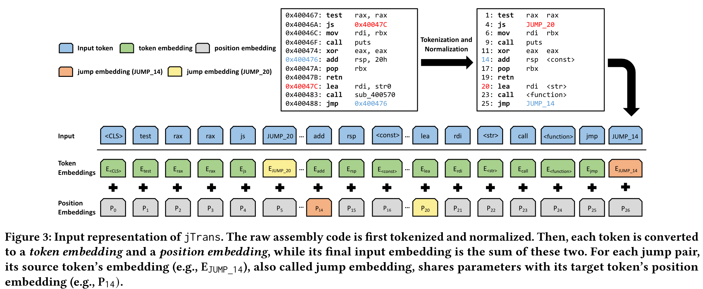

jTrans：Jump-Aware Transformer for Binary Code Similarity Detection
论文提出了一种新的学习二进制代码representation的方法jTrans：设计了一种新的jump-aware representation以及相应的预训练任务。同时构造了一个新的二进制程序数据集BinaryCorp。
传统的二进制相似性检测（BCSD）方法大多基于CFG，这种方法时间开销大且鲁棒性差，因为编译器优化等因素会改变程序CFG，改进方法通过计算CFG片段的相似性提高鲁棒性，但基于人工构造的特征，导致这些方法不能精确提取程序语义。
SOTA方法大多基于机器学习技术，将目标二进制程序转化成特征向量，在向量空间中计算相似性。Asm2Vec和SAFE等基于NLP方法；另一些方法基于GNN学习CFG的representation；还有一些方法结合使用上述两种方法：使用NLP技术计算基本块的representation，根据CFG构造GNN进一步处理基本块representation。
SOTA方法存在的缺点：
- NPL-based方法只考虑了指令的序列顺序以及指令之间的关系，而忽略了程序的实际执行信息（如控制流），缺乏对程序的语义理解，无法应对编译优化产生的影响。
- 仅依靠CFG会遗漏每个基本块的语义，Genius和Gemini使用人工提取的特征（指令数）扩展CFG，但这些特征不足以捕获代码语义。另外，这些方案使用GNN理解CFG，GNN只能捕获结构信息，而且训练和并行相对困难。
- 用于训练和评估现有方案的数据集的体量和多样性不够大，缺乏一个通用的大型数据集。SOTA各自使用各自构建的数据集，存在过拟合的可能，造成性能高的假象。
jump-aware representation即通过共享指令的每个跳转目标的token embedding和position embedding参数来捕获控制流信息。首先使用无监督学习任务对jTrans进行预训练，学习指令语义和控制流信息，之后对jTrans进行微调，匹配语义相似的函数。不依赖于GNN遍历相应的CFG。
Preprocessing Instructions
- 使用助记符和操作数作为tokens
- 使用<str>代表字符串
- 使用<const>代表立即数
- 将外部函数调用的名称和标签作为tokens，将内部函数调用的名称替换为<function>
- 对于每个跳转对，使用JUMP_XXX替换源token，XXX是该跳转对的目标token顺序，消除随机基址的影响。
Modeling Jump Instructions
修改了位置编码机制，以反映跳转指令的影响。位置编码的隐含逻辑是标记之间的距离越大，表示相互影响越弱，而跳转指令能够将代码中相聚较远的区域结合起来。方法是通过参数共享实现：对于每个跳转对，source token’s embedding被用作target token的positional encoding。jTrans目前只考虑了直接跳转。

Train
-
Pre-train jTrans
-
MLM
-
jump task prediction(JTP)：给定一个随机选择的jump source token，标记为<LOC>，预测相应的target token。
-
-
Fine-Tuning
针对函数相似性检查这一监督学习任务对模型进行微调。